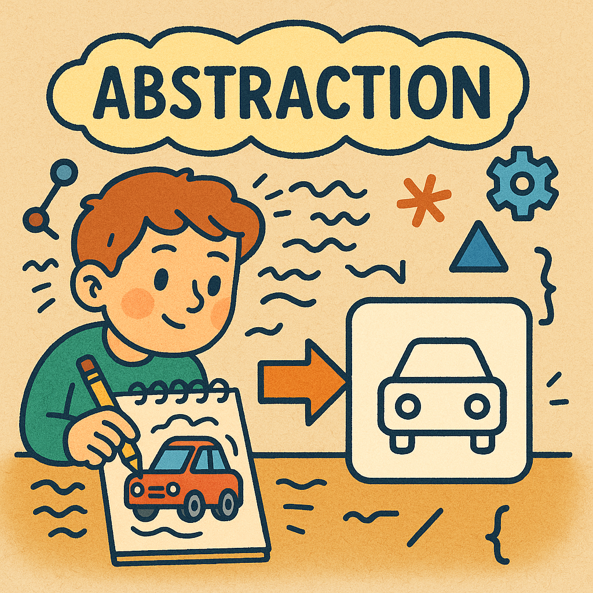

🤔
什么是计算思维？
计算思维的四大核心要素
让我们通过生动的例子和互动练习来理解这些核心概念
🔧
问题分解
把复杂的大问题拆解成若干个更小、更易处理的独立小问题。
生活例子：烤披萨
- 准备面团
- 制作酱料
- 准备馅料
- 烘烤
技术应用
编程中将大型软件分解为不同模块，每个模块负责特定功能。
小测验：烤披萨的步骤
将以下制作披萨的步骤拖拽到右侧的框中，并排列成正确顺序：
将步骤拖到这里
🔍
模式识别
在数据中寻找相似性、规律或趋势，找到重复的模式。
生活例子：数学数列
2, 4, 6, 8, 10... (规律：每个数比前一个数大2)
技术应用
AI图像识别通过分析大量图片学习识别物体的共同特征。
小测验：找规律
观察数列：1, 4, 9, 16, ? 下一个数字是什么？
🎯
抽象
聚焦于问题的关键信息，忽略不相关的细节。
生活例子：地铁线路图
只画出站点、线路和换乘信息，忽略街道、建筑的具体细节。
技术应用
URL地址是对网络资源的抽象，我们无需知道服务器的具体物理位置。
小测验：信息抽象
如果要画一张从你家到学校的简单路线图给朋友，以下哪个细节最不重要，可以省略？
⚡
算法设计
设计清晰、有限且按顺序执行的步骤序列来解决问题。
生活例子：制作三明治
拿面包 → 抹酱 → 放馅料 → 盖上面包片
技术应用
搜索引擎通过复杂算法在海量网页中快速找到相关结果。
简单编程逻辑示例
示例1: 制作柠檬水的步骤 (伪代码)
开始
1. 取一个杯子
2. 将柠檬切片，放入杯中
3. 加入适量糖
4. 倒入凉水
5. 用勺子搅拌均匀
6. 尝一尝
7. 如果 (不够甜) 那么
回到步骤 3
否则 如果 (不够酸) 那么
加入更多柠檬片，回到步骤 5
否则
完成，享用柠檬水
结束示例2: 判断数字是否为偶数 (伪代码)
开始
输入一个数字 N
如果 (N 除以 2 的余数 等于 0) 那么
输出 "N是偶数"
否则
输出 "N是奇数"
结束小测验：泡茶的顺序
以下是“泡一杯茶”的步骤，哪个选项是正确的顺序？
- 把茶叶放入杯中
- 把杯子拿到桌上
- 倒入热水
- 等待3分钟
计算思维解决问题流程
图：计算思维解决问题的简化流程 (鼠标悬停到方块上试试)
计算思维在科技领域的应用
💻
编程与软件开发
通过问题分解将复杂软件拆分为模块，使用抽象简化复杂性，设计算法实现功能。
🤖
人工智能
AI通过模式识别学习数据规律，使用抽象提取关键特征，设计算法实现智能决策。
🌐
互联网技术
搜索引擎通过算法快速检索信息，社交网络使用模式识别推荐内容。
开启你的计算思维之旅
计算思维不仅仅是编程技能，它是一种普适性的问题解决能力。 掌握它，你将在数字化时代拥有无限可能！